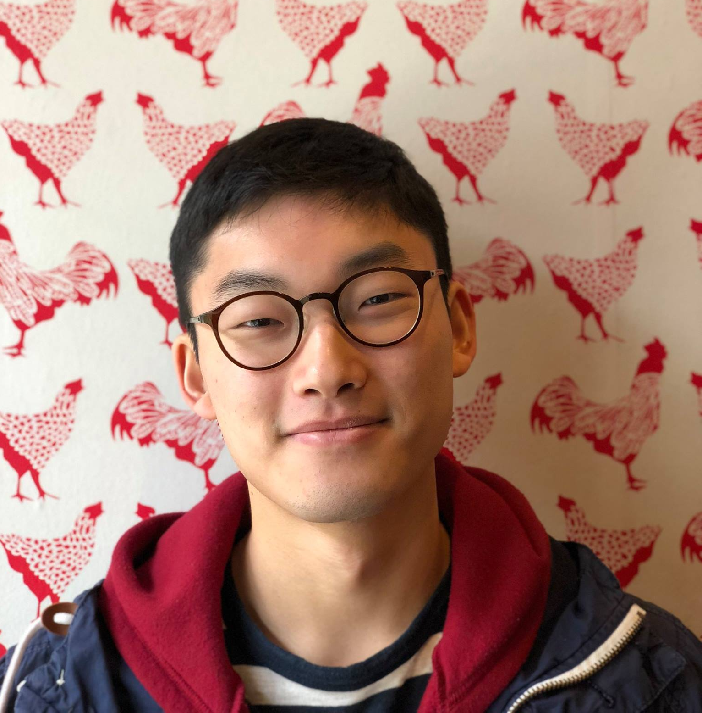

Graduate Student
Theory of Computation Group,
Harvard University
CV
My research focus is broadly in theoretical computer science and its applications to quantum information. Currently, I'm working various problems in quantum computing, ranging from quantum property testing, learning theory, and complexity theory.
I am currently a PhD student at Harvard supervised by Anurag Anshu. Before arriving at Harvard, I spent the first two years of my PhD at UT Austin, under the supervision of John Wright. I received my B.Sc. from Carnegie Mellon University, where my thesis was advised by Anıl Ada and Ryan O'Donnell.
| | CS 2232: Frontiers of Quantum Complexity Theory |
| | IAS PCMI Graduate Summer School, Overview of Quantum Learning Theory |
| | QSE 210A: Quantum Information Science |
| | 15-251: Great Theoretical Ideas in Computer Science |